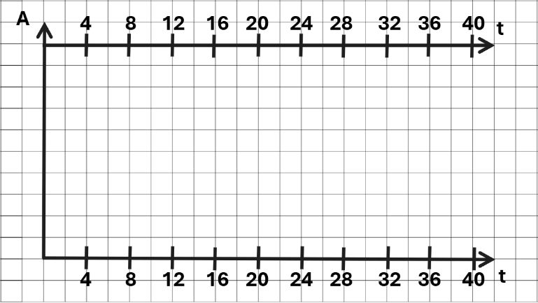

1) Чертим координатную плоскость. Вертикальная ось- работа (А), горизонтальная- время.
2) Если знаем работу, то откладываем это количество на координатной оси.
3) Параллельным переносом, дублируем ось времени, которая исходит из точки, отложенной на оси работы (пункт 2).
4) Если у нас в условиях задачи прописано конкретное время (Например, работа выполнялась до 13.00), тогда на осях времени прописываем конкретное время. Если в задаче это не указано, то условно считаем, что начинаем работу в 00:00 и откладываем на осях времени отметки с равным интервалом.
Один мастер может выполнить заказ за 40 часов, а другой — за 24 часа. За сколько часов выполнят заказ оба мастера, работая вместе?
Начертим шаблон графика. Так как нам не сказано, сколько деталей изготовлено, на оси, отражающей работу (кол-во готовых изделий), ничего не указываем.
Проводим прямую, отражающую скорость работы первого мастера. Соединяем начало координатных осей и точку на оси времени, равную 40 часам. Проводим и вторую прямую, отражающую скорость работы второго мастера.
Видим, что на отметке 12 часов обе прямые проходят через угловые точки. Считаем, на какой высоте в клетках находятся обе прямые. Первая — 3, вторая — 5. Так как мы ищем, за сколько часов мастера выполнят работу совместно, то суммируем наши клетки и получаем 8.
Значит, прямая, отражающая скорость совместного выполнения работы, будет проходить через точку, находящуюся на отметке 12 часов на высоте, равной 8 клеток. Отмечаем эту точку. Проводим прямую, соединяющую начало координатных осей и построенную нами точку. Видим, что она доходит до отметки, равной 15 часам.
15 часов.
